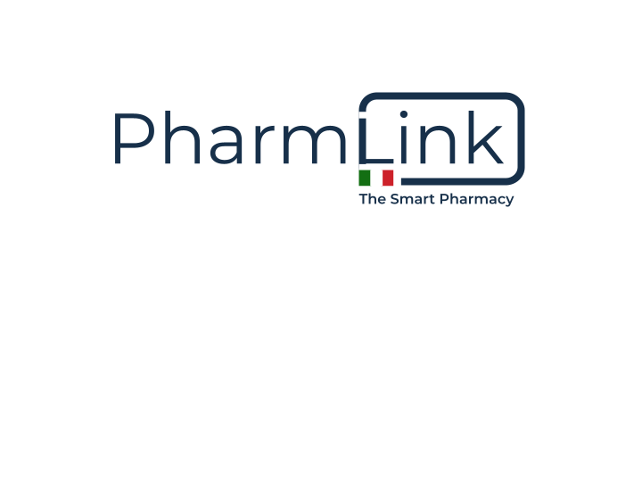

Il futuro della vetrina digitale.
PharmLink è la piattaforma intelligente che automatizza la comunicazione della tua farmacia. Gestisci turni, orari e promozioni in tempo reale, senza muovere un dito.

Automazione Reale
Nessun software complicato da installare. Sincronizziamo i dati direttamente dai tuoi fogli di lavoro Google.
Servizio H24
I tuoi clienti troveranno sempre le farmacie di turno aggiornate, con QR code per la navigazione immediata.
Pronto all'uso
Compatibile con ogni Smart TV o monitor professionale. Basta un browser per iniziare a trasmettere.